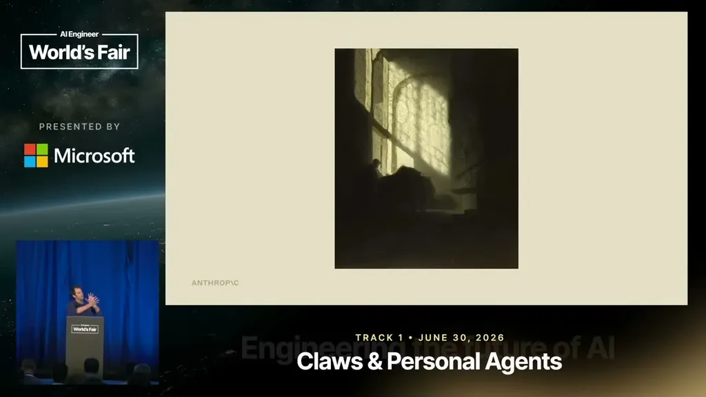
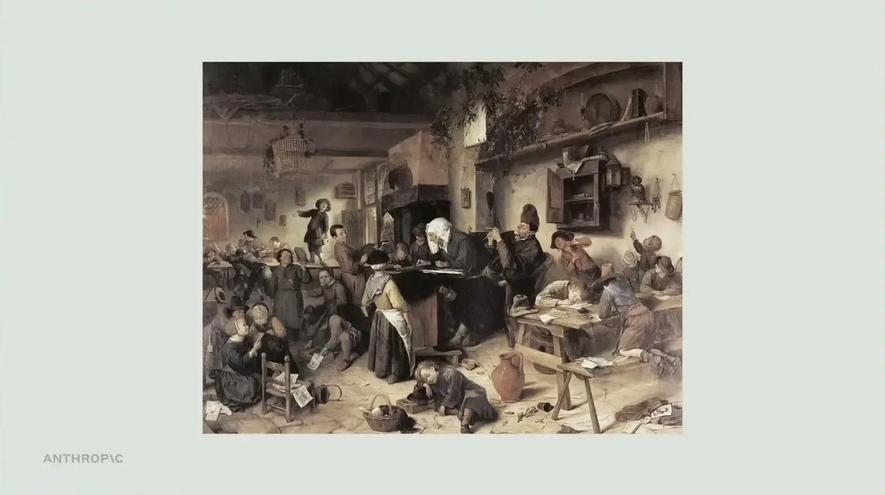
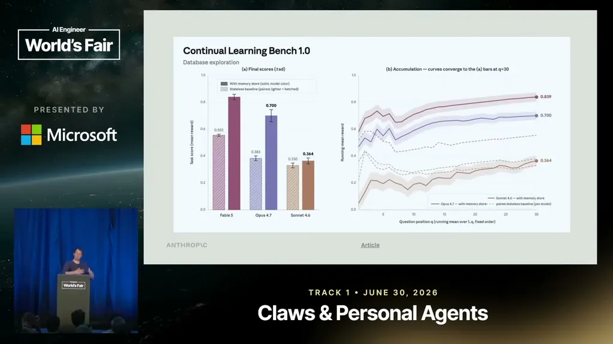
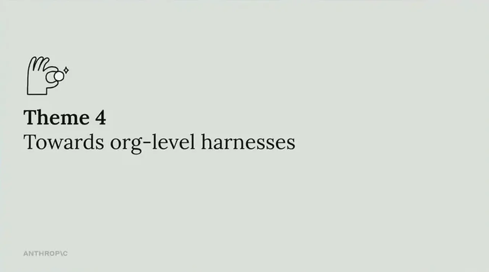

Managed Agents architecturally separates the harness (the "brain") from the execution containers (the "hands"). The harness is a stateless process that talks to a session, which is an append-only event log; the session survives even if the harness or a sandbox dies, and credentials are stored in a separate vault rather than inside the container. Martin notes this session-as-context-object pattern also gives long-horizon context engineering a benefit: the model can always fetch old, unadulterated context rather than relying on lossy compaction.
“So theme one is decoupling the brain from the hands.”
▶ watch at 03:08“the harness becomes a stateless process that talks to a session”
▶ watch at 04:10“we released a new API called Managed Agents, which basically packages both the harness as well as all the managed deployment infrastructure for you”
▶ watch at 02:37
Because a single context window used for both doing work and grading it produces confabulation, Anthropic found it effective to run verification in a separate context window against a measurable outcome or rubric. Martin ran this pattern on OpenAI's Parameter Golf benchmark using Managed Agents, letting a frontier model iterate until an independent verifier confirmed the outcome was met, and reports strong results from pairing high-capacity models with this loop pattern.
“what we found is it's quite effective to separate verification into a separate context window”
▶ watch at 06:44“the frontier capability models are extremely good with this pattern of kind of loops in software and and kind of verification”
▶ watch at 09:17
Martin draws an analogy to hippocampus (short-term, in-band) and cortex (long-term, offline-consolidated) memory. Giving Claude a file-system memory directory to write to in-band shows models getting steadily better at this across generations, but in-band writes can also lock in locally-optimal or outright incorrect memories. An offline "dreaming" pass that reviews prior sessions can correct these errors.
“sometimes you can write incorrect memories. And or you're writing things that are locally optimal, but not globally optimal”
▶ watch at 13:28“This is very consistent. So, I saw this in five replicates. Five out of five replicates with raw memory store fell down this trap.”
▶ watch at 14:33
Martin frames Claude Tag not as a Slack bot but as an org-level, multiplayer harness with its own identity and access to organizational context rather than a single user's local context. In Q&A, he argues the memory substrate itself (file system vs. database) matters less than keeping it a general, model-manipulable primitive rather than a prescriptive, pre-defined memory schema.
“what I think um is kind of this trend that we're going to see moving towards org-level harnesses with async agents”
▶ watch at 16:08“very general substrates for memory, be it just your database or file system, are good because the model can manage them freely”
▶ watch at 22:36
The Parameter Golf and Pokemon examples are informal, single-presenter demonstrations rather than published benchmark results with error bars, so the magnitude of the verifier-loop and dreaming gains should be treated as illustrative rather than quantified (ours). The architectural claims about session logs and credential separation are more concrete and map directly onto the publicly documented Managed Agents API design.
| Stance | Claim | t |
|---|---|---|
| asserts | Managed Agents separates the harness ("brain") from the execution containers ("hands") so that a dying container doesn't destroy the agent's session. | 03:08 |
| asserts | The harness is a stateless process that talks to a session, which is an append-only event log that persists even if the harness dies. | 04:10 |
| recommends | Anthropic found it effective to separate verification into its own context window rather than having the same context both do the work and grade it. | 06:44 |
| asserts | Frontier capability models perform very well with the pattern of verifier loops in software, self-correcting when they get feedback from an independent verifier. | 09:17 |
| warns | Writing memory in-band during a task can produce incorrect memories, or memories that are locally optimal for the current task but not globally useful for future sessions. | 13:28 |
| warns | Without offline dreaming, an agent playing Pokemon fell through the same trapdoor in five out of five replicates because of an uncorrected incorrect memory. | 14:33 |
| predicts | Martin predicts a shift toward org-level harnesses for asynchronous agents, exemplified by Claude Tag, that operate on organizational context rather than one user's local setup. | 16:08 |
| recommends | General, model-manipulable memory substrates like a database or file system work better than a prescriptive memory schema that pre-defines what types of memories to save. | 22:36 |
| asserts | Anthropic released Managed Agents, an API that packages both the agent harness and the managed deployment infrastructure. | 02:37 |
Machine-readable copy embedded in this page (script#ontology) and in the corpus ontology.